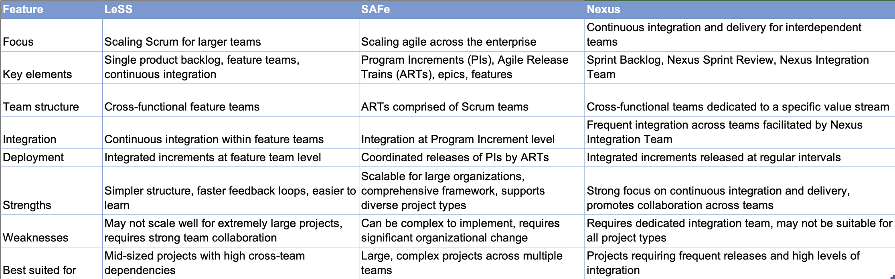

Introduction:
Feeling lost in a labyrinth of interconnected tasks, stories, and epics within your complex project? Drowning in dependencies and struggling to navigate the tangled web of agile work? Fear not, project management heroes! This article unveils the secrets to conquering even the most intricate projects with powerful agile frameworks like LeSS, SAFe, and Nexus.
Discover how to break down epic challenges into achievable stories, manage them in sprints using proven best practices, and leverage continuous integration and delivery for seamless execution. Learn how each framework, LeSS, SAFe, and Nexus, offers distinct advantages and best fits specific project needs.
Whether you're launching a rocket, developing cutting-edge software, or delivering innovative products, this article provides real-world examples and practical guidance to help you:
Choose the right framework for your unique project complexity.
Effectively manage interdependencies between tasks and stories.
Achieve continuous delivery for efficient project progression.
Measure success with targeted KPIs and agile metrics.
Get ready to unlock the true potential of agile methodology and conquer even the most complex projects with confidence. Embrace the power of LeSS, SAFe, and Nexus and watch your projects soar to success!
In this article, we explore how three popular scaling frameworks – SAFe, LeSS, and Nexus – can be applied to orchestrate a flu-shot marketing campaign successfully. Additionally, we delve into the integration of Function Point Analysis (FPA) to measure and evaluate the success of these campaigns.
Framework comparisonManaging Intertwined Projects: A Framework Showdown with Real-World Examples
Imagine a complex project: launching a flu-shot marketing campaign with intertwined tasks like crafting personalized recommendations, designing engaging content, and building a robust backend system. How do you navigate this intricate web of dependencies? Enter the agile frameworks: SAFe, LeSS, and Nexus, each offering unique strengths to tame the beast.
SAFe: Scaling Up, Step by Step
Epic Level: Define the campaign's "big picture", like developing a personalized recommendation system.
Program Level: Organize cross-functional teams, Agile Release Trains(ARTs) to tackle specific aspects. Imagine one ART focusing on content creation, another on user experience, and a third on backend development.
Team Level: Break down features into user stories for each Scrum team. One team might create and test marketing content, while another implements the recommendation system.
Code Implementation: Feature teams collaborate across boundaries to build the end-to-end solution. Developers from different ARTs work together on both frontend and backend components.
Deployment and Packaging: Coordinate releases across ARTs. Imagine releasing the marketing content and recommendation system together in a single, impactful launch.
Measurement and KPIs: Track success using metrics like increased sign-ups, engagement rates, and user satisfaction. Measure the number of patients who signed up for flu-shots post-campaign compared to previous years.
LeSS: A Collaborative Sprint
Epic Level: Maintain a single product backlog for the entire campaign. Prioritize marketing tasks, user stories, and technical tasks in one central location.
Scaling Teams: Organize feature teams that work collaboratively on all aspects of the campaign. Imagine a team focused on content, another on user experience, and another on backend changes, all working together.
Code Implementation: Ditch the silos! Cross-functional teams work on all aspects of the code, ensuring seamless integration. Developers, designers, and marketers collaborate within the same team to implement features.
Deployment and Packaging: Deploy features incrementally, integrating them into the campaign as they are finalized. Imagine marketing content being integrated into the overall campaign package as it's completed.
Measurement and KPIs: Track success through product metrics like user adoption, conversion rates, and user feedback. Analyze user engagement and sign-up rates post-campaign to gauge impact.
Nexus: Integration is Key
Integration Team: Establish a dedicated team responsible for ensuring smooth integration of work from different teams. Imagine developers from various teams collaborating in this Nexus Integration Team to ensure seamless integration of marketing content and code changes.
Code Implementation: Teams pull work from a single backlog and collaborate on coding. Development teams work together on implementing both marketing features and backend changes within a sprint.
Deployment: Ensure frequent integration and testing of increments from different teams. Imagine marketing content and code changes being integrated at the end of each sprint to form a cohesive package.
Measurement and KPIs: Collect feedback during the Nexus Sprint Review to assess the success of the integrated work. Use feedback from users and stakeholders to measure the campaign's impact on flu-shot sign-ups.
Other Agile Frameworks:
Disciplined Agile (DA): Combines practices from various frameworks, offering flexibility but requiring customization.
Spotify Model: Decentralized approach, emphasizing autonomy and ownership within teams, often used in software development.
Kanban: Focuses on continuous flow of work, well-suited for ongoing maintenance and improvement projects.
Commonalities and Differences of Agile Frameworks: SAFe, LeSS, Nexus
While all three frameworks aim to scale agile practices for larger projects, they have distinct approaches:
Commonalities:
Iterative and incremental development: All three emphasize delivering working software in short cycles (sprints) and continuously improving based on feedback.
Emphasize collaboration: Each framework fosters collaboration across teams and roles to achieve shared goals.
Value transparency and visibility: They promote transparency through various artifacts and ceremonies, allowing everyone to understand progress and roadblocks
Real-Life Examples of Managing Intertwined Projects with Agile Frameworks:
SAFe:
Capital One: Used SAFe to streamline their credit card rewards program, resulting in a 25% reduction in lead time and a 30% increase in customer satisfaction.
Spotify: Initially adopted SAFe but later moved to a more decentralized model. However, SAFe's structured approach still influences their agile practices.
Ford Motor Company: Utilized SAFe to improve the development of their self-driving car technology, leading to faster innovation and increased collaboration.
LeSS:
Netflix: Embraces LeSS to manage their highly scalable streaming platform, focusing on cross-functional feature teams and continuous delivery.
LEGO: Leverages LeSS to develop new toy sets, promoting close collaboration between designers, engineers, and marketing teams.
Scaled Agile, Inc.: The company behind the LeSS framework itself implements it internally, demonstrating its effectiveness for scaling Scrum.
Nexus:
Vodafone: Used Nexus to improve the delivery of new mobile services, resulting in faster time to market and increased customer satisfaction.
ING Bank: Implemented Nexus to streamline their online banking platform, achieving shorter development cycles and improved system stability.
Expedia: Leverages Nexus to manage the development of their travel booking platform, ensuring seamless integration across various services.
Function Point Analysis: Quantifying Complexity
Function Point Analysis (FPA) helps measure project size and complexity. Here's how it applies to our flu-shot campaign:
Data Model Changes: Identify changes for personalized recommendations, like introducing new database tables for user preferences and vaccination history.
Code Implementation: Measure function points associated with implementing features like content creation and recommendation algorithms.
Deployment: Evaluate the effort required for deploying marketing materials and code changes.
Packaging: Measure function points required to package the entire solution for deployment, considering marketing materials, code changes, and backend updates.
Remember, the best framework depends on your specific project needs and team structure. Experiment, analyze, and choose the approach that empowers your team to conquer even the most intertwined projects!
Further Reading: Deepen Your Agile Knowledge
Delve deeper into the world of agile frameworks for complex projects with these resources:
General Agile Resources:
Scaled Agile Framework (SAFe): https://scaledagileframework.com/
Large-Scale Scrum (LeSS): https://less.works/
Nexus Framework: https://www.scrum.org/resources/nexus-guide
Framework-Specific Resources:
SAFe:Implementing SAFe for Lean Enterprises: https://scaledagileframework.com/
LeSS:LeSS for Large-Scale Scrum Services: https://less.works/
Nexus:The Nexus Framework for Scaled Agile Development Guide: https://www.scrum.org/resources/nexus-guide
Case Studies and Examples:
SAFe Case Studies: https://www.toptal.com/project-managers/scaled-agile-framework/safe-case-studies
LeSS Case Studies: https://less.works/case-studies
Nexus Case Studies: https://kendis.io/framework-for-scaling-scrum/companies-scaling-scrum-with-nexus/
Additional Reading:
Agile Frameworks, a comparison between SAFe, LeSS and Nexus https://dareplanet.tech/en/insights/agile-frameworks-safe-less-nexus-comparison/
Agile Project Management with Kanban: https://www.amazon.com/kanban-Boards/s?k=kanban+Boards
Continuous Delivery: Reliable Software Releases through Build, Test, and Deployment Automation: https://www.amazon.com/Continuous-Delivery-Deployment-Automation-Addison-Wesley-ebook/dp/B003YMNVC0
Accelerate: The Science of Lean Software Development and Continuous Delivery: https://www.amazon.com/Accelerate-Software-Performing-Technology-Organizations-ebook/dp/B07B9F83WM